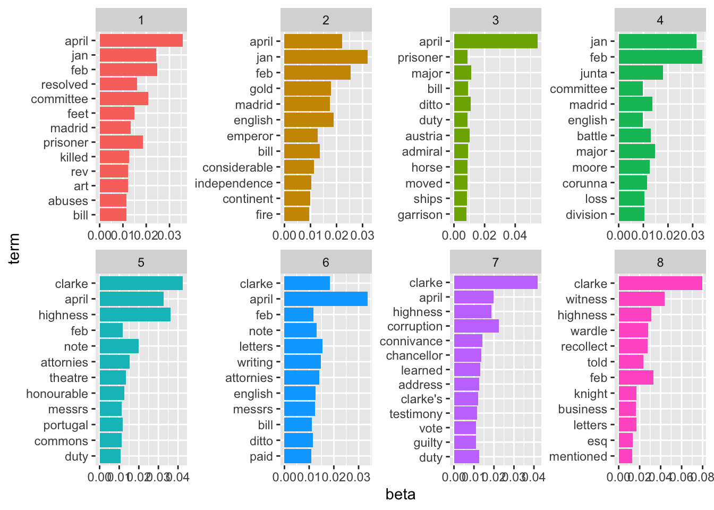

12 Topic modelling
Another text mining tool which can be useful in exploring newspaper data is topic modelling. Topic modelling tried to discern a bunch of ‘topics’, expressed as a set of important keywords, from a group of documents. It works best if each document covers one clear subject.
Load relevant libraries. If you’ve loaded the notebooks into Rstudio, it should detect and ask if you want to install any missing ones, but you might need to use install_packages() if not.
Load the tokenised dataframe created in the term_frequency notebook.
Like in the tf_idf notebook, make a dataframe of the words in each document, with the count and the tf-idf score.
issue_words = tokenised_news_sample %>%
mutate(issue_code = paste0(title, full_date)) %>%
group_by(issue_code, word) %>%
tally() %>%
arrange(desc(n))Using the function cast_dtm() from the topicmodels package, make a document term matrix. This is a matrix with all the documents on one axis, all the words on the other, and the number of times that word appears as the value.
dtm_long <- issue_words %>%
filter(tf_idf > 0.00006) %>%
filter(n>5) %>%
cast_dtm(issue_code, word, n)result %>%
group_by(topic) %>%
top_n(12, beta) %>%
ungroup() %>%
arrange(topic, -beta) %>%
mutate(term = reorder(term, beta)) %>%
ggplot(aes(term, beta, fill = factor(topic))) +
geom_col(show.legend = FALSE) +
facet_wrap(~ topic, scales = "free", ncol = 4) +
coord_flip()